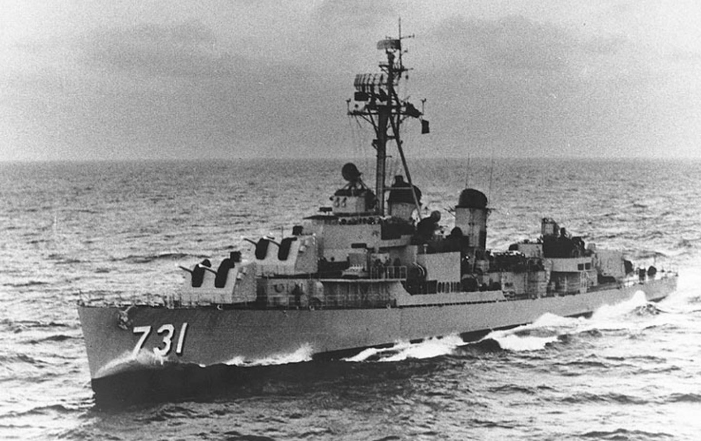

Vietnam War
The Vietnam war lasted a great period of time. The war was between the communist government of North Vietnam and the leaders of South Vietnam and their allies, mainly the United States. The Vietnam war intensified greatly during the cold war conflict between the united states and the soviet union. When the war came to an end the damage was much too great to comprehend, more than 3 million people lost their lives of those people 58,000 were Americans, and more than half of those people were Vietnam civilians. This conflict not only divided a nation but also divided Americans, even after President Richard Nixon withdrew the US forces. The was officially came to an end when communist North Vietnam took
Backgorund info
Vietnam prior to the war was a french occupied land, the French had ruled Vietnam from the 19th century. When the Japanese invaded during world war 2 they freed Vietnam from French colonialism. During that time there was a political leader named Ho Chi Minh, which was influenced by Chinese and Soviet communism, he created the Viet Minh or the league which would bring independence to Vietnam. After 1945, the Japanese forces have been defeated in world war 2 and starting to withdraw their forces from Vietnam, this left Vietnam in the hands of Bao Dai, a french educated Emporer. But Ho’s forces had other plans, with this opening they quickly moved and took over the northern city of Hanoi and declared it as the democratic republic of Vietnam with Ho as president.
After the world war ended french were seeking to regain control of Vietnam so in hopes of doing that they back up Emperor Bao. in July 1949 France set up a state of Vietnam with Saigon as its capital. Both Ho Chi Mink and Boa wanded the same thing to unify Vietnam but the difference was that boa wanted Vietnam closer economically and culturally tied to the west, Ho wanted Vietnam to be communist.
Start of the Vietnam war
Soldiers from the 173rd Airborn Brigade on a search-and-destroy patrol in 1966.jpg)
There is no real date when the Vietnam war started since the conflict in the region stretched back to several decades but the conflict intensified when U.S. active involvement began in 1954. The Vietnam War started when Ho Chi Minh communist forces took power in Northern Vietnam on November 1, 1955. Because of that, the armed conflict between the Northern Vietnam army and Southern Vietnam army continued until the Northern Vietnam victory at the battle of Dien Bien Phu in May 1954. France lost the battle of Dien Bien Phu, and with their loss, the French colonies rule in Indochina came to an end. With the battle of Dien Bien Phu coming to an end, a treaty was signed in July 1954 at the Geneva conference to split Vietnam along the latitude 17th parallel. The agreement resulted in a way that would make Ho in control of North Vietnam and Bao in control of South Vietnam. By 1955, a strong anti-communist politician and catholic nationalist, Ngo Dinh Diem, became the president of the Republic of Vietnam, thus pushing aside Bao Emperor. Ngo Dinh Diem was the leader of southern Vietnam. Also, by 1955, president of the United States, Dwight D. Eisenhower pledged his support to the Diem government and South Vietnam.
The Viet Cong
Viet Cong.jpg)
With the cold war intensifying worldwide, the United States hardened its policies for any allies of the soviet union. By 1955, the president of the united states, Dwight D. Eisenhower, had pledged to support Diem and South Vietnam. The training and equipment from the U.S. military and the CIA, Diem’s security forces cracked down on Viet Minh supporters, arresting some 100,000 people many of them were tortured and executed. By 1957, the Viet Cong and other opponents of Diem’s repressive regime began to fight back and by 1959 they got into a firefight with the South Vietnam army. In December 1960, the opponent of Diem, communist and non-communists formed the National Liberation Front(NLF) to organize the resistance of the regime.
Domino Theory
By 1961, John F. Kennedy sent a team to report on the condition in South Vietnam which they advised that economically, technical aid, and build-up of the American military in order to help the Diem fight the Viet Cong. the “Domino theory” stated that if one Southeast Asia country falls in the hands of communists than many other countries would soon follow. Kennedy did not want to find a bigger battel later when communists had spread to another country in southeastern Asia so by providing U.S. Aid to the opponent of communist they could stop the spread of communism at an early stage so he wouldn’t have to commit a large-scale military attack. By 1962, U.S. Military troops stationed in South Vietnam had reached a number of 9,000 troops.
Gulf of Tonkin
In November 196, a coup by some of Diem generals had successfully overthrown the Diem government, Diem and his brother, Ngo Dinh Nhu, were killed. After the assassination of John F. Kennedy in Dallas, Texas. The political instability in South Vietnam led Lyndon B. Johnson, Kennedy’s successor, and Robert McNamara, secretary of defence, to increase U.S. military and economic support to South Vietnam.
In August 1964, DRV torpedo boats attacked and US destroyers in the Gulf of Tonkin, Johnson ordered a counter-attack on military targets in North Vietnam. After which congress passed the Gulf Tonkin Revolution, which gave Johnson broad war-making powers, and soon after U.S. Planes began regular bombing raids, codenamed Operation Rolling Thunder. Between 1964-973 The united states secretly dropped 3 million Bombs on the neighbouring country, natural Laos during the CIA-led "secret war " in Laos. The Purpose of the Bombing was to stop/disrupt the flow of supplies between Laos and Vietnam. Pathet Lao a communist leader who was supporting the Vietnam communist by sending supplies through the Ho Chi Minh trail and due to that us made Lao the most bombed country per capita in the world
March 1965, As the war progressed Johnson made a decision to send us combat forces into the battle of Vietnam, this decision was solidly supported by the American majority. By June 82,000 combat troops were sent to Vietnam and stationed there, but by the end of 1965 another 175,00o troops more will be stationed to help the struggling south Vietnam army. But not all Americans were fond of the idea of war, during the war the anti-war movement grew, Johnson will commit another 200,000 men by the end of 1966, and not just America but many different countries like South Korea, Thailand, Australia, New Zealand, committed troops to fight in South Vietnam although at a much smaller scale.
William Westmoreland
West Moreland.jpg)
While bombing and another method of the fight were there, but the main way of fighting was by ground, and in charge of the ground battles were the general William Westmoreland, in coordination with the government of General Nguyen Van Thieu in Saigon. When many other generals had the policy of capturing as much land as possible, William Westmoreland had the policy of killing as many enemy soldiers as possible. By 1966, many areas of South Vietnam were labelled as “free-fire zone”. But even when the enemy body count was rising, the Viet Cong refused to give up encouraged by the fact that they could reoccupy the land with he help form more manpower, supplies delivered through the Ho Chi Minh Trail, and support of Cambodia, Laos, China, and the soviet union.
Tet Offensive
Tet Offensive.jpg)
By the end of 1967, Hanoi’s communist leadership was restless as they were trying to figure out where to strike a decisive blow so they make better supplied united states give up hopes of success.on January 331, 1968, estimating 70,000 CRV forces under General Vo Nguyen Giap launched the Tet offensive, price attacks on more than 100 cities and towns in South Vietnam. Although the U.S. and South Vietnam were surprised by the Tet offensive, they were able to counter-attack quickly and efficiently, and the communists were unable to hold the target for more than a day or two.
Reports of the Tet operation stunned Americans, and what stunned more was that general William Westmoreland requested 200,000 troops, even though they assured it that victory in the Vietnam war was imminent. With this, the ratting dropped in an election year, Johnson called a halt to bombing in much of North Vietnam and promised to solve the situation through peace in full terms.
In march 1968 speech had great effects, Hanoi responded positively to the speech. Peace talks were opened in Paris in May 1968. Despite the later addition of South Vietnamese and NLF, the talk soon reached a dead end, and after the 1968 election season impaired by violence, the presidency went to Richard M. Nixon.
Vietnamization
Nixon on the Vietnamization.jpg)
Nixon thought the anti-war movement through appealing to a small majority of Americans who supported the war effort. In an attempt to cut down of american casualties they put a program in place, the program was called vietnamization, the program withdrew american troops but increased aerial and artillery bombing and gave the south vietnmanese forces better training and better equipment to fight efficiently on the ground. Besides the vietnamization program, Nixon continued peace talk in Paris, and high-level secret talks by secretary of state Henry Kissinger beginning in the spring of 1968.
The north vietnmaes demande that in order for the peace talk to take place their conditions where that america completely withdraws from this war and the expulsion of General Nguyen Van Thieu, but due to the condition the peace talks resulted in a hang back.
My Lai Massacre
My Lai Massacre.jpg)
The next few will result in a massacre in which the U.S. soldier will massacre an unarmed 400 civiliams in the village of My Lai in march1968. As the actions of troops saw great effect on the U.S. homefront, the anti-war movement saw rapide popularity growth between 1968 and 1969, but the anti war movement saw its greatest height in november 15, 1969, the largest anti-war demonstration in american history took place in washington D.C. with 250,000 americans feathered peacefully. The anti-war movement divided Americans to two sides; one side saw that going against the government was like treason, and for others the war seemed like it was unrestrained authority which they resented.
Due to this many soldiers were withdrawn from the war and other soldiers who were not withdrawn were angry and frustrated. Many as tens and thousands of soldiers were dishonorably discharged for desertion. 500,000 men became draft dodgers and fled to canada to evade conscription after which Nixon ended the draft.
End of the Vietnam War
1973 U.S. wtihdraws from vietnam war.jpg)
In january 1973, the United States and north vietnam signed a peace treaty in paris, after which the US involvement in the vietnam war ended. Although America’s role came to a end in the vietnam war, it did not end well not immediately after, north vietnam continued fighting for the control of south vietnam. April 30,1975, when DRV forces captured Saigon, renaming it Ho Chi Minh City. After two decades of chaos and war the effects on vietnam were starting to show many as 2 million vietnamese were killed, another 3 million wounded, and 12 million more became refugees. Warfare had destroyed the country's infrastructure, and economy, the reconstruction of Vietnam was a hard and slow process.
By 1979, vietnam was unified under a new name, the socialist republic of vietnam, even though vietnam was unified the violence conflict still continued for another 15 years which includes conflict between vietnam and its neighboring countries. In 1986 a broad free market place was put in place which helped the economics improve their situation, the economy also busted by oil export revenue and an influx of foreign capital. Trade and diplomatic actions resumed between the U.S. and Vietnam in the 1990s.